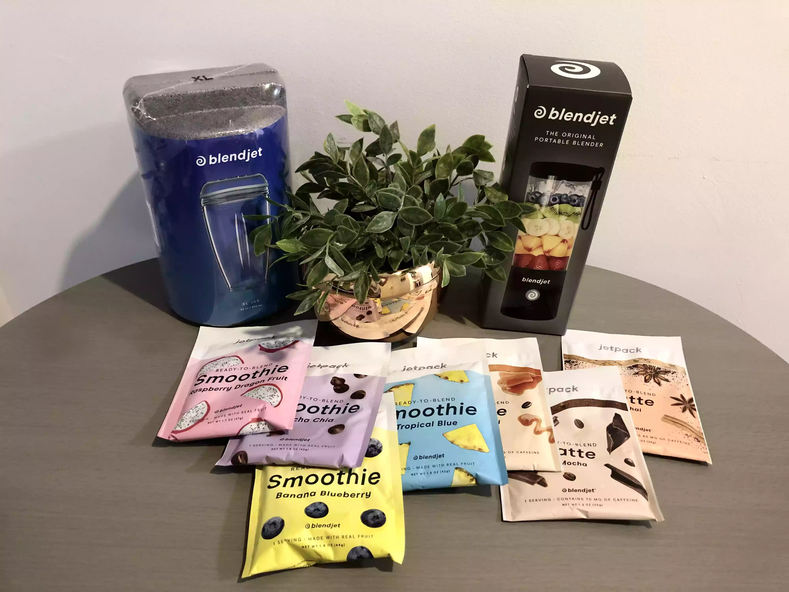
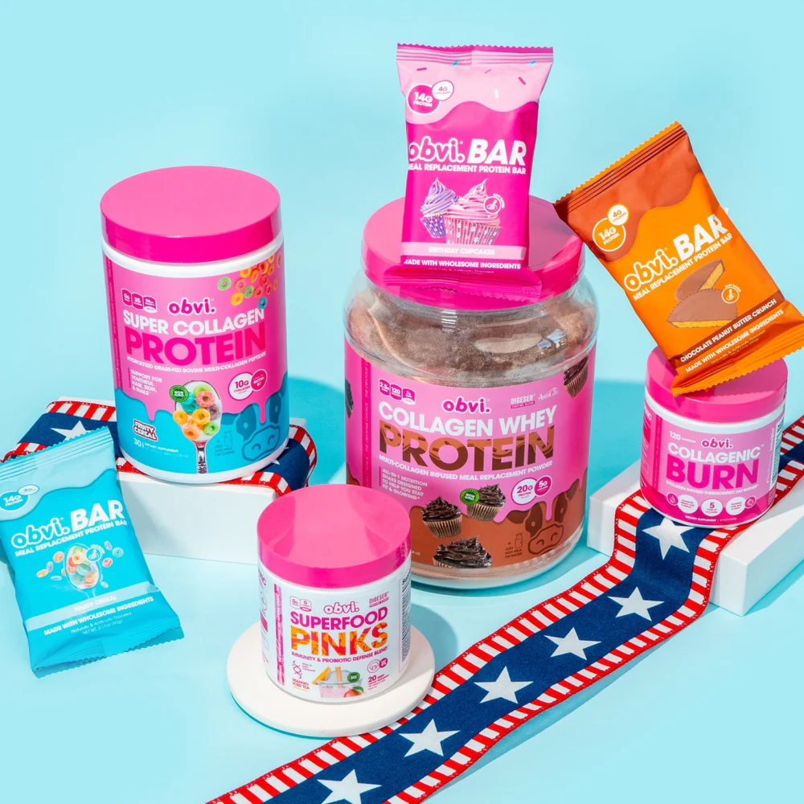

If you’ve ever craved a smoothie but not had time to prepare the ingredients, blend it endlessly to get the right consistency,and then clean up, do I have a secret for you. The BlendJet (now upgraded to BlendJet 2!) lets you bring the refreshment of a smoothie anywhere you go, and in a fraction of the time.The BlendJet promises to deliver quick, efficiently made, clump-free smoothies that look and (if you use the packets) taste good. I found that to be mostly true. Some ingredients worked better than others.
Growing up, you didn’t have to put too much thought into your hair, skin, or nails - you were blessed with the gift of youth, and thrived naturally. But as you age, particularly after your 25th birthday - things start to change. Your collagen production drops drastically, which affects your skin, hair, and nail health.You’ll notice your skin doesn’t have that same youthful glow, your hair looks more brittle (or worse - falls out more rapidly), and your nails struggle to grow.The good news is, you can turn back the clock and take control of your health appearance with our More Than Collagen powder.
One of the most essential parts of a portable blender is its ability to stay charged when you’re out and about.This model has a 4000 mAh battery that lasts up to 15 blends before needing to be recharged.For such a compact blender, the BlendJet has some stellar features packed in that you should keep in mind.
What does “OBVI” mean to you? To us, it means the “obvious” choice. It is the obvious choice for a protein supplement with extra collagen and other nutrients. It is the obvious choice whether you want to lose weight, feel younger, or support immunity.Great Taste to Support Great NutritionIt is way too hard to choke down chalky powders and tasteless meal replacement bars, no matter how badly you want their benefits. Obvi bars and powders taste so good that supporting a leaner body will be a treat, not a chore.
